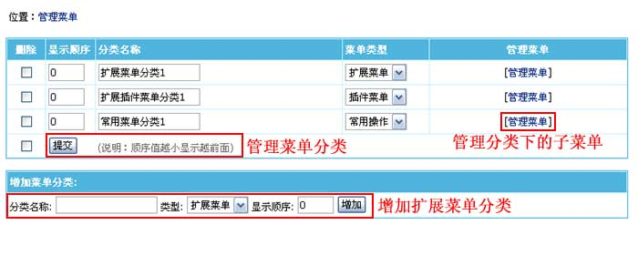

自定义扩展菜单
选择本节内容
> 扩展菜单介绍
> 管理菜单分类
> 管理菜单
一、扩展菜单介绍：
扩展菜单支持新增常用操作、插件菜单及扩展菜单自定义功能，扩展系统更方便。
二、管理菜单分类：
(一)、登录后台，单击“
系统
”菜单，选择“
管理菜单
”子菜单，进入管理菜单分类界面：
(二)、进入管理菜单分类界面：

分类名称
填写分类名称。
类型
选择要增加的菜单类型：扩展菜单、插件菜单、常用操作。
显示顺序
菜单分类的显示顺序。
三、管理菜单：
1、“
管理菜单分类
”界面 -> 点击相应分类下的“
管理菜单
”进入管理菜单界面（见下图）：
菜单名称
填写菜单名称。
显示顺序
设置菜单的显示顺序。
链接地址
链接地址从后台算起，比如后台首页链接地址是：main.php
2、增加菜单后，可预览扩展菜单如下：